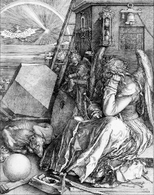

Abstract
An introduction to Magic Squares and their meaning.
Table of Contents
MAGIC Magic square.
MAGIC(N) is an N-by-N matrix constructed from the integers
1 through N^2 with equal row, column, and diagonal sums.
Produces valid magic squares for all N > 0 except N = 2.
Reference page in Help browser
doc magic
The German artist Albrecht Durer (1471-1528) created many woodcuts and prints with religious and scientific symbolism. One of his most famous works, Melancholia I, explores the depressed state of mind which opposes inspiration and expression. Renaissance astrologers believed that the Jupiter magic square (shown in the upper right portion of the image) could aid in the cure of melancholy. The engraving's date (1514) can be found in the lower row of numbers in the square.
| 64 | 2 | 3 | 61 | 60 | 6 | 7 | 57 |
| 9 | 55 | 54 | 12 | 13 | 51 | 50 | 16 |
| 17 | 47 | 46 | 20 | 21 | 43 | 42 | 24 |
| 40 | 26 | 27 | 37 | 36 | 30 | 31 | 33 |
| 32 | 34 | 35 | 29 | 28 | 38 | 39 | 25 |
| 41 | 23 | 22 | 44 | 45 | 19 | 18 | 48 |
| 49 | 15 | 14 | 52 | 53 | 11 | 10 | 56 |
| 8 | 58 | 59 | 5 | 4 | 62 | 63 | 1 |